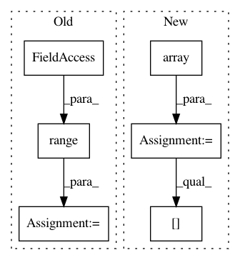

5dd5b8652f28426322309c4e983c94a3caa8fa8e,libact/query_strategies/variance_reduction.py,VarianceReduction,A,#VarianceReduction#,19
Before Change
def A(self, pi, c, x, label_count, feature_count):
grad = pi[c] * np.ones((feature_count*label_count))
for i in range(feature_count):
for j in range(label_count):
if c == j:
grad[i*label_count+j] *= (1-pi[c]) * x[i]
//grad.append(pi[c] * (1-pi[c]) * x[i])
else:
grad[i*label_count+j] *= (-pi[j]) * x[i]
//grad.append(-pi[c] * pi[j] * x[i])
//grad = np.array(grad)
//print(np.shape(grad))
return np.dot(grad.T, grad)
def Fisher(self, pi, x, label_count, feature_count):
fisher = np.ones((label_count*feature_count, label_count*feature_count))
After Change
print(s-time.time())
print(np.shape(grad))
_pi = -1 * np.array(pi)
_pi[c] += 1
grad = pi[c] * np.tile(np.array([x]).T, (1, label_count)) *\
np.tile(np.array([_pi]), (feature_count, 1))
grad = grad.reshape((feature_count*label_count))
In pattern: SUPERPATTERN
Frequency: 3
Non-data size: 6
Instances
Project Name: ntucllab/libact
Commit Name: 5dd5b8652f28426322309c4e983c94a3caa8fa8e
Time: 2014-12-19
Author: yangarbiter@gmail.com
File Name: libact/query_strategies/variance_reduction.py
Class Name: VarianceReduction
Method Name: A
Project Name: scikit-optimize/scikit-optimize
Commit Name: b0699b34e2b16cb3abbd22c397077cc6c21ef279
Time: 2016-11-30
Author: mks542@nyu.edu
File Name: skopt/optimizer/base.py
Class Name:
Method Name: base_minimize
Project Name: tiberiu44/TTS-Cube
Commit Name: 288e2868ce5f35a9c8ecf3e3fa913f293adcf7e7
Time: 2018-10-31
Author: boros@adobe.com
File Name: cube/models/vocoder.py
Class Name: BeeCoder
Method Name: learn